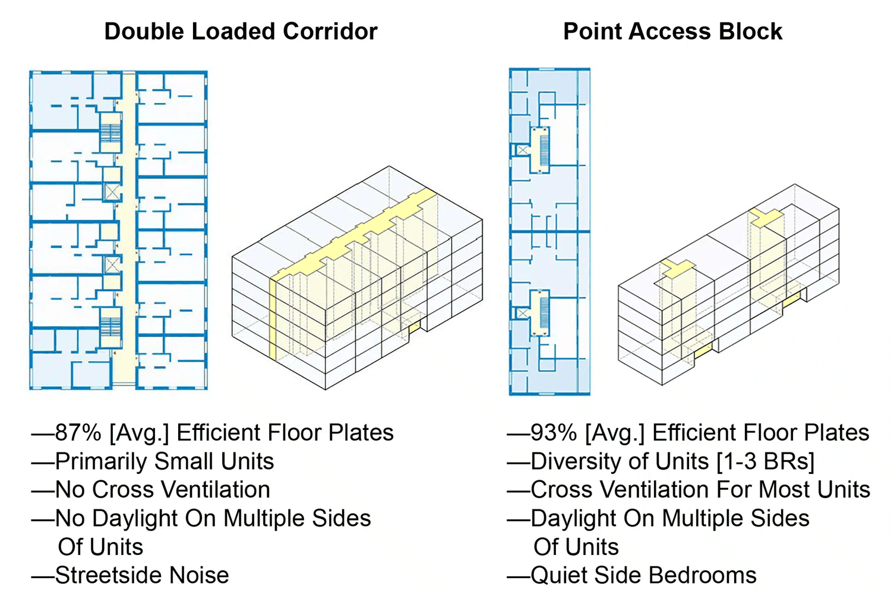

This site is shared with project stakeholders for discussion purposes. Enter the access code to continue.
Need access? Contact erik@nowcitylabs.com
The foundational design move for Edgewater: more homes in the same shell, built for less, that live better.
Most underwriting treats the building as fixed and reaches for subsidy to close the gap. Edgewater starts a step earlier. By abandoning the expensive concrete podium and adopting a single-stair Point Access Block, the project recovers hallway area into leasable homes, shifts construction to slab-on-grade, and delivers dual-aspect units with light and cross-ventilation on multiple sides. The result is more rentable area in the same envelope, at a lower cost per foot, that commands a quality premium. In the Upside Explorer this single move carries the base case from well underwater to near breakeven before a dollar of subsidy is applied.
A double-loaded corridor runs a hallway down the middle with apartments on both sides and two exit stairs, losing 15-20% of the floor plate to circulation. A Point Access Block clusters a small number of units around one central core, so nearly every square foot is leasable, and units open to more than one face.

| Metric | Traditional double-loaded | PAB courtyard model | Value impact |
|---|---|---|---|
| Efficiency ratio | 82% leasable/gross | 93% leasable/gross | +11 points of revenue area |
| Circulation area | ~32,000 SF | ~4,500 SF | ~27,000 SF recovered to homes |
| Estimated hard cost | ~$325/SF (podium) | ~$245/SF (slab-on-grade) | ~25% cost reduction |
The savings are not a single line item. Eliminating the concrete podium and building an at-grade courtyard cascades through three major cost centers at once, and the courtyard itself does double duty as the site's stormwater system.
Because units wrap a core rather than line a corridor, most open to two or three faces. That means cross-ventilation, daylight from multiple sides, quiet courtyard-facing bedrooms, and only a handful of neighbors per floor. This is the European courtyard model, and it is a genuine market differentiator that supports the rent premium, not a discount product.
| Unit type | Share | What the layout makes possible |
|---|---|---|
| 1 Bedroom | 45% | Quiet zone: bedroom faces the courtyard, living faces the street. |
| 2 Bedroom | 30% | Dual-master: bedrooms at opposite ends, no shared walls between them. |
| 3 Bedroom | 10% | Family flats: corner units with windows on three sides. |
| Studio | 15% | Boutique feel with only a few neighbors per floor. |
This is not a variance play. Oregon has deliberately opened the door to exactly this typology. The 2025 Oregon Structural Specialty Code, mandatory for new permits as of April 2026, permits single-exit stairways in Group R-2 multifamily within clear limits, and Oregon HB 3395 (2023) directs the Building Codes Division to remove barriers for small-footprint buildings, explicitly to lower construction costs by 10-15%.
Edgewater's honest base case loses money, because a conventional podium at attainable Salem rents does not pencil. The Point Access Block changes the inputs the project actually controls: it adds roughly 15% more homes in the same approved envelope, cuts the hard-cost basis by about a quarter, and improves the product. Everything else the project does, public partnership, tax-credit equity, placemaking, sits on top of that stronger foundation. It is also the right move for the mission: more attainable homes per acre, lower embodied carbon from less concrete, healthier daylit and naturally-ventilated units, and a courtyard that manages its own water.
The single-stair movement has a growing bench of practitioners and advocates across the Pacific Northwest and California, several of whom Now City can engage for Edgewater's design.
Sources: Now City internal design and cost research; Oregon Structural Specialty Code 2025; Oregon HB 3395 (2023); Washington SB 5156. This page is a planning brief for stakeholder discussion, not a code determination; the design team will confirm all metrics at permit.